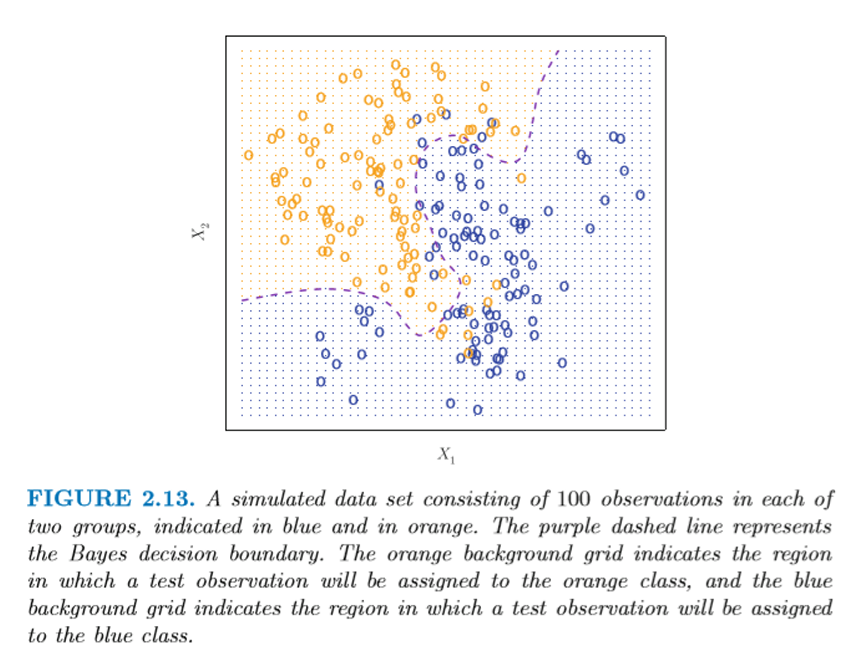
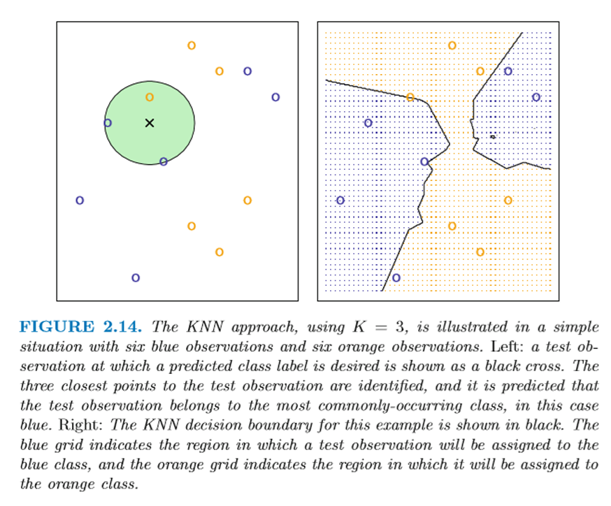
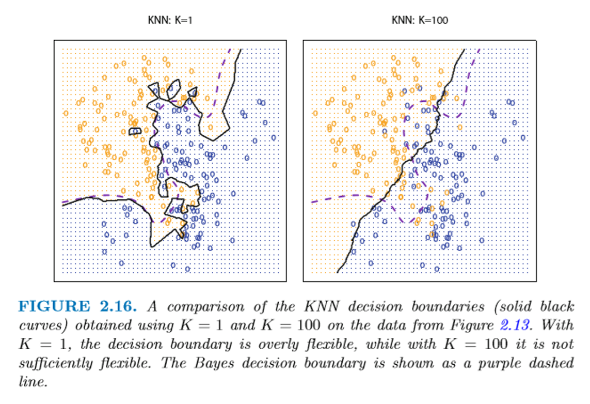
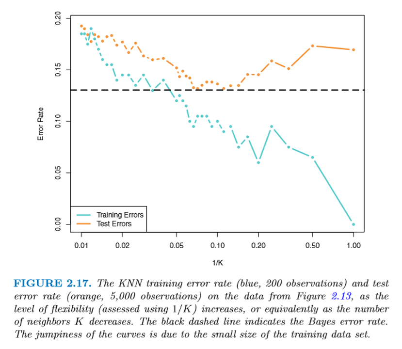
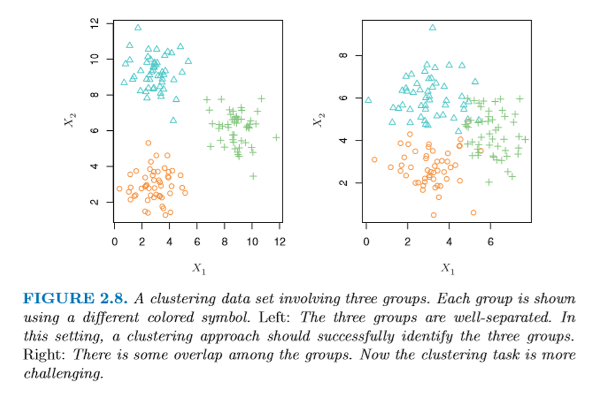

Week03: Classification - Bayesian k-Nearest Neighbor Class Assignment
1 Classification: Bayesian k-Nearest Neighbor Class Assignment
In the classification setting the outcome variable is discrete, that is,
\[y_i = k \text{ if object } i \text{ belongs to the } k^{th} \text{ class}\]
The error rate, which we aim to minimize, becomes \(\frac{1}{n}\sum_{i=1}^{n} I(y_i \neq \hat{y}_i)\), where the indicator function
\[I(\quad) = \begin{cases} 1 & \text{if } y_i \neq \hat{y}_i \\ 0 & \text{if } y_i = \hat{y}_i \end{cases}.\]
A Bayesian classifier assigns an observation \(i\) to the class \(k\) if its conditional probability \(\Pr(Y = k|X = \mathbf{x}_0)\) is larger than that for any other class.
For just two classes \(K = 2\) the probability must be \(\Pr(Y = k|X = \mathbf{x}_0) > 0.5\).
The Bayesian class membership probabilities in \(k\)-nearest neighborhood (kNN) is calculated as:
o Determine those \(k\) training points which are the closest to the prediction point \(\mathbf{x}_0\).
Closeness is measured in terms of the Euclidian distance between two objects \(i\) and \(j\) with their feature vectors \(\mathbf{x}_i = (x_{i1}, x_{i2}, \dots, x_{iP})^T\) and \(\mathbf{x}_j = (x_{j1}, x_{j2}, \dots, x_{jP})^T\) by
\[d_{ij} = \sqrt{\sum_{p=1}^{P} (x_{ip} - x_{jp})^2}.\]

o Important: Distances change with the scale (i.e., range) of the underlying variables. This is a problem encountered in all distance-based machine learning methods.
o Subsequently estimate the Bayesian group probabilities by \(\Pr(Y = k|X = \mathbf{x}_0) = \frac{1}{|\mathcal{N}_0|}\sum_{i \in \mathcal{N}_0} I(y_i = k)\), where \(\mathcal{N}_0\) is the neighborhood around the prediction point \(\mathbf{x}_0\) with \(|\mathcal{N}_0|\) the number of training points \(K\) around the prediction location.
o Assign the observation to class \(k\) with the highest probability.

The user decides the hyper-parameter \(|\mathcal{N}_0|\) to the desired number of nearest neighbors
This hyper-parameter \(|\mathcal{N}_0|\) determines flexibility of kNN algorithm:

- The hyperparameter \(|\mathcal{N}_0|\) also influences the test and training error rates:

The function e1071::gknn( ) performs kNN model calibrations.
\(k\)-nearest neighbors can also be used to handle metric dependent variables \(y\). In that case, the predicted value \(y_0\) is the average value of the observed values \(y_i\) in its neighborhood \(\mathcal{N}_0\).
In case of an overall class tie, the predicted class is chosen at random.
Advantages of the kNN model:
o Simple and effective estimation, which gives by default the probability of the predicted group membership.
o Makes no assumptions about the underlying distribution of the features.
o Virtually no training time required.
Disadvantages of the kNN model:
o As the number of features increases, the decision space becomes more sparsely populated (curse of dimensionality) which increases the overall uncertainty.
o How are ties (two classes have equal maximum probabilities) broken?
o Features that are irrelevant for the classification task are not eliminated (Machine Learning concept of regularization) thus there is the potential of overfitting the data.
o The performance of the algorithm depends on how comparable the features are scaled to evaluate their distances.
o For each test data point \(\mathbf{x}_0\) the distances need to be calculated to identify the \(k\) nearest neighborhood \(\mathcal{N}_0\).
o Euclidian distances for nominal scaled features and missing feature information require additional processing.
o The algorithm’s prediction performance depends on the the hyper-parameter \(k\).
2 Unsupervised ML: Multivariate Normal-Distribution Mixture Grouping
See Boehmke & Greenwell Chapter 22: Model-based Clustering pp 429-441
In unsupervised learning, only the object features \(\mathbf{x}_i\) but not the outcome \(y_i\) are known to the investigator.
A function \(f(\quad)\) is sought that allows us to guess what \(y\) could be based on the inherent structure within the observed feature matrix \(\mathbf{X}\).
An example of unsupervised learning is to group feature adjacent objects together into clusters. With respect to their features \(\mathbf{x}_i\) the clusters are supposed to be internally as homogenous as possible, but the identified clusters should be as heterogeneous (distinct) from each other.
Fuzziness in the cluster delimitations determines the success of the classification rule.
Example: Identifying a multivariate mixture distribution
o The distribution of points with multiple centers and ellipsoidal standard distances can be modeled by a mixture of multi-normal distributions.
For example in the 2-dimensional setting the mixture distribution the joint density becomes:
\[f\left[\begin{matrix} x_i \\ y_i \end{matrix}\right] \sim \sum_{q=1}^{Q} \pi_q \cdot \mathcal{N}\left(\left[\begin{matrix} \mu_{x,q} \\ \mu_{y,q} \end{matrix}\right], \left[\begin{matrix} \sigma_{x,q}^2 & \sigma_{xy,q} \\ \sigma_{xy,q} & \sigma_{y,q}^2 \end{matrix}\right]\right) \text{ with } \pi_q > 0 \text{ and } \sum_{q=1}^{Q} \pi_q = 1\]
o Unknowns are:
[a] the number of clusters \(Q\),
[b] the proportion of points per cluster \(\pi_q\),
[c] the \(Q\) cluster centers \(\left[\begin{matrix} \mu_{x,q} \\ \mu_{y,q} \end{matrix}\right]\) and
[d] their \(Q\) ellipsoidal covariance matrices \(\left[\begin{matrix} \sigma_{x,q}^2 & \sigma_{xy,q} \\ \sigma_{xy,q} & \sigma_{y,q}^2 \end{matrix}\right]\).

o The probability \(\Pr\left(q \left|\left[\begin{matrix} x_i \\ y_i \end{matrix}\right]\right.\right)\) of observation \(\left[\begin{matrix} x_i \\ y_i \end{matrix}\right]\) belonging to cluster \(q\) is evaluated using the Bayesian theorem
\[\Pr\left(q \left|\left[\begin{matrix} x_i \\ y_i \end{matrix}\right]\right.\right) \sim \frac{f\left(\left[\begin{matrix} x_i \\ y_i \end{matrix}\right]|q\right) \cdot \Pr(q)}{\sum_{q=1}^{Q} f\left(\left[\begin{matrix} x_i \\ y_i \end{matrix}\right]|q\right) \cdot \Pr(q)}\]
with the likelihood of \(\left[\begin{matrix} x_i \\ y_i \end{matrix}\right]\) being in the \(q^{th}\) class \(f\left(\left[\begin{matrix} x_i \\ y_i \end{matrix}\right]|q\right) \sim \mathcal{N}\left(\left[\begin{matrix} \mu_{x,q} \\ \mu_{y,q} \end{matrix}\right], \left[\begin{matrix} \sigma_{x,q}^2 & \sigma_{xy,q} \\ \sigma_{xy,q} & \sigma_{y,q}^2 \end{matrix}\right]\right)\)
and the prior probability \(\Pr(q)\).